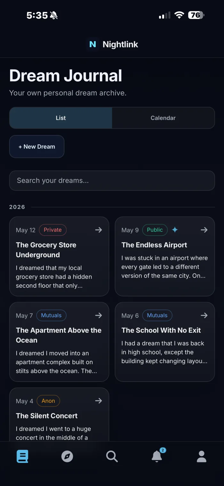
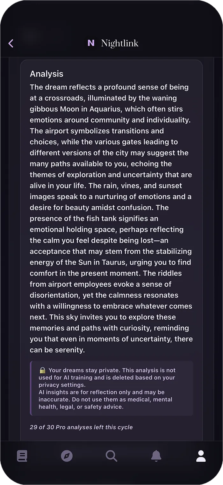

Dream journal & social network
Write down the
strange part.
Nightlink is a private dream journal with an AI layer that reads back what you wrote, and a social side you open one entry at a time. Keep it to yourself, share it with mutuals, post it anonymously, or let the whole feed see it.

Catch it before it goes
A dream starts dissolving the moment you sit up. Nightlink is built to be faster than that, so the entry exists before the details are gone.
-
Write or speak it
Type it out or dictate it with voice input while your eyes are still closed. AI drafts a title so you don't have to name it half-asleep.
-
List or calendar
Read your archive as a running list or spread across a calendar, so recurring nights are easy to spot.
-
Search everything
Full-text search across every entry you've ever written. Find the one with the airport, or the one with the ocean.
-
Works offline
Installable as a home-screen app on iOS and Android. Drafts hold even when the connection doesn't.
Visibility
Four settings, chosen per dream
Nothing is public by default. Every entry carries its own visibility, and you can change it after the fact.
-
Private
Yours alone. It never appears in a feed and no one can search it.
-
Mutuals
Visible only to people you follow who follow you back.
-
Anonymous
Shared publicly with your name and profile stripped off the post.
-
Public
Open to the whole feed, with your handle attached.

Analysis
A second reading of your own night
Ask for an analysis and Nightlink writes back a few paragraphs on the symbols, transitions, and moods in what you logged, folding in the moon phase the dream landed under.
- Your dreams are never used to train AI models.
- Analyses are deleted according to your privacy settings.
- Written for reflection, not as medical or mental health advice.
Nightlink Pro
When one analysis a month isn't enough
The journal, the feed, and the privacy controls are all free forever. Pro is for people who want the AI layer working every night.
Free
- Unlimited dream entries
- All four visibility settings
- Full social feed and profile
- One AI analysis a month
Pro
- 30 AI analyses per billing cycle
- Every analysis style unlocked
- Custom analysis instructions
- Dream memory that builds over time
- Extra credits available any time